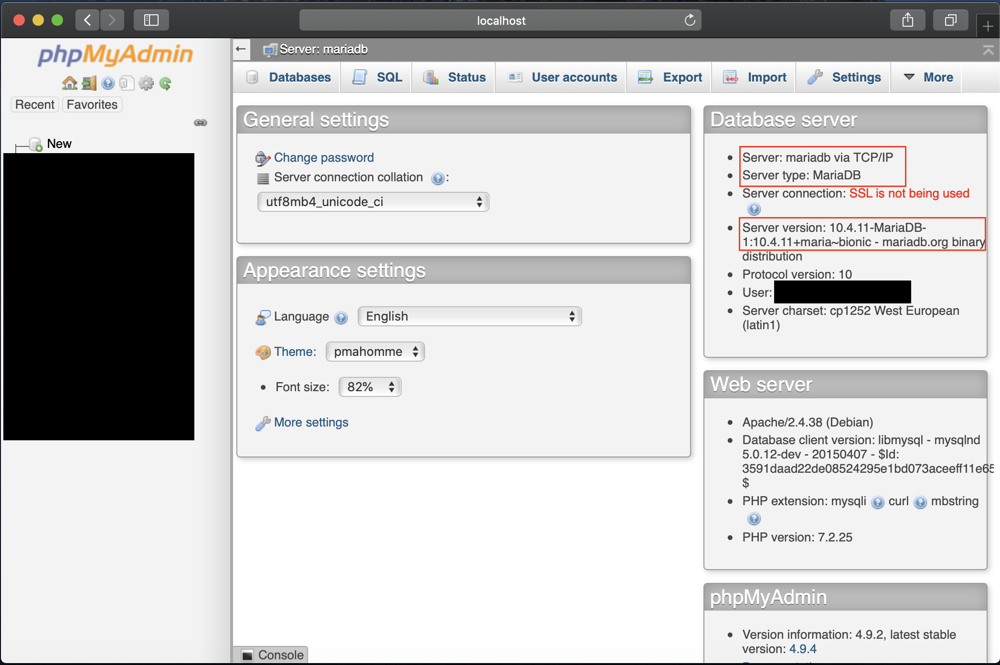
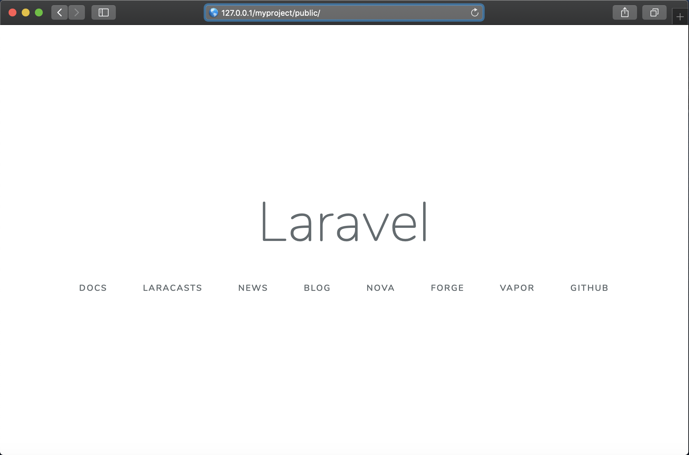

<!DOCTYPE html>
<html lang="zh-tw">
    
<head>
    <meta charset="UTF-8">
    <meta name="viewport" content="width=device-width, initial-scale=1">
    <meta name="generator" content="Yee的補坑筆記">
    <title>Laradock - 更快速優雅的建立Laravel - Yee的補坑筆記</title>
    <meta name="author" content="Yee">
    
        <meta name="keywords" content="laravel,docker,">
    
    
    
    <script type="application/ld+json">{"@context":"http://schema.org","@type":"BlogPosting","author":{"@type":"Person","name":"Yee","sameAs":["mailto:amung966w@gmail.com"],"image":"yee.jpeg"},"articleBody":"嗨～ 大家好～ 先跟大家拜個年～  新年快樂\n要來跟大家介紹的是Laradock，\n\n\nLaradock是一套很方便建立Laravel環境的工具，\n它採用的是Docker並且收錄了很多的工具，\n像是常見的 Apache、Nginx、Phpmyadmin…等\n甚至連Gitlab都有了，\n功能非常的齊全，所以也有點肥大！？！？\n話不多說我們開始吧～～\n\n本文所採用的環境\b\n\nMax OSX 10.15\nDocker version 19.03.5\n\n已知可用的環境\n\nCentos7\n\n\n首先先到Laradock的官網下載整個包 Laradock，\n1git clone https:&#x2F;&#x2F;github.com&#x2F;Laradock&#x2F;laradock.git\n\n接著複製env.example存成.env\n12cp env-example .envvim .env\n\n打開.env後發現有很多設定，\n跟環境比較有關係的是這些\n\n12345678910111213141516### Paths ################################################## Point to the path of your applications code on your host# 專案要放在本機的哪個資料夾中APP_CODE_PATH_HOST&#x3D;.&#x2F;www&#x2F;# Point to where the &#96;APP_CODE_PATH_HOST&#96; should be in the container# 在container中，專案的資料夾名稱，這裡會跟上面的地方做對應APP_CODE_PATH_CONTAINER&#x3D;&#x2F;var&#x2F;www# You may add flags to the path &#96;:cached&#96;, &#96;:delegated&#96;. When using Docker Sync add &#96;:nocopy&#96;# 還不知道可以做什麼.....APP_CODE_CONTAINER_FLAG&#x3D;:cached# Choose storage path on your machine. For all storage systems# \b\b系統檔案的路徑，有些工具會有一些非專案的檔案，就會存放在此DATA_PATH_HOST&#x3D;~&#x2F;.laradock&#x2F;data\n\n除了基本的環境設定外，\n.env檔裡存放著各個工具的預設帳號密碼與相關設定，\n只要修改欲使用工具的設定值即可\n，在此以phpmyadmin做演示，\n\n1234# Accepted values: mariadb - mysql# phpmyadmin搭配的sql是誰PMA_DB_ENGINE&#x3D;mysql\n\n注意者裡一定要設定，\n屆時開啟phpmyadmin就會自動啟動sql\n1234567891011# phpmyadmin的預設使用者PMA_USER&#x3D;default# 預設使用者的密碼PMA_PASSWORD&#x3D;secret# sql root帳號的密碼PMA_ROOT_PASSWORD&#x3D;secret# phpmyadmin要開在哪一個portPMA_PORT&#x3D;8080\n\n這邊要注意的是root的密碼，\n預設使用者的密碼可以屆時再改或設定成亂碼，\n畢竟這些預設值都是眾人皆知的，\n以資安來說最好是採用亂數密碼來設定比較好\b，\n以上設定完了之後就可以來啟動拉～\n1docker-composer up -d apache phpmyadmin 想啟動的服務...\n\n在這裡我只跟docker說我要啟動 apache 和 phpmyadmin 這兩項服務，\n接著你會發現docker會啟動數個container，\n\n仔細觀察可以發現，\n他將workspace、php、apache、mysql都分開來，\n好處就是今天更換其中一個的版本，\n都不需要額外設定主機的環境變數…等，\n這些事情docker都幫你在底層處理好了～～ \n接著來看一下container的狀態\n123docker ps 或docker-compose ps\n\n可以看到每個container開啟的port號與狀態，\n所有的服務都有順利執行，\n我們打開瀏覽器並輸入localhost:8080，來檢查phpmyadmin是否順利啟動\n\n123Server &#x3D; mysql or mariadbUsername &#x3D; defaultPassword &#x3D; secret\n\n就可順利進入到phpmyadmin的主畫面了\n接下來就是建立專案拉～\n先進入到workspace這個container中，\n會發現預設進入的資料夾是 /var/www/，\n123docker-compose exec workspace bashcomposer create-project --prefer-dist laravel&#x2F;laravel myprojectvim .env\n\n將DB連線設定為 mysql or mariadb並設定sql的使用者與密碼\n12345DB_HOST&#x3D;mysql DB_PORT&#x3D;3306DB_DATABASE&#x3D;defaultDB_USERNAME&#x3D;defaultDB_PASSWORD&#x3D;secret\n\n因為在docker裡container與container之間是用名稱去做連結，\n不同以往採用localhost的方式連線sql\n設定完成後打開瀏覽器輸入 localhost/myproject/public，\n如果出現laravel的預設畫面，表示我們已經順利將專案建立起來拉～～\n\n\n後記\n這裡我比較偷懶，沒有額外去設定vitrulhost，安全性也會比較有疑慮，\n如果用nginx則需要再設定conf與host才能順利執行，\n改天在寫一篇設定vitruhost 跟 nginx conf的教學 ～～\n","dateCreated":"2020-01-27T17:35:51+08:00","dateModified":"2020-02-08T17:46:51+08:00","datePublished":"2020-01-27T17:35:51+08:00","description":"嗨～ 大家好～ 先跟大家拜個年～  新年快樂\n要來跟大家介紹的是Laradock，","headline":"Laradock - 更快速優雅的建立Laravel","image":[],"mainEntityOfPage":{"@type":"WebPage","@id":"https://yeeinhole.github.io/2020/01/27/laradock/"},"publisher":{"@type":"Organization","name":"Yee","sameAs":["mailto:amung966w@gmail.com"],"image":"yee.jpeg","logo":{"@type":"ImageObject","url":"yee.jpeg"}},"url":"https://yeeinhole.github.io/2020/01/27/laradock/","keywords":"laravel, docker, laradock, devops, w3HexSchool"}</script>
    <meta name="description" content="嗨～ 大家好～ 先跟大家拜個年～  新年快樂 要來跟大家介紹的是Laradock，">
<meta property="og:type" content="blog">
<meta property="og:title" content="Laradock - 更快速優雅的建立Laravel">
<meta property="og:url" content="https://yeeinhole.github.io/2020/01/27/laradock/index.html">
<meta property="og:site_name" content="Yee的補坑筆記">
<meta property="og:description" content="嗨～ 大家好～ 先跟大家拜個年～  新年快樂 要來跟大家介紹的是Laradock，">
<meta property="og:locale" content="zh_TW">
<meta property="og:image" content="https://yeeinhole.github.io/image/laradock1/env.png">
<meta property="og:image" content="https://yeeinhole.github.io/image/laradock1/env-phpmyadmin.png">
<meta property="og:image" content="https://yeeinhole.github.io/image/laradock1/docker-start.png">
<meta property="og:image" content="https://yeeinhole.github.io/image/laradock1/docker-ps.png">
<meta property="og:image" content="https://yeeinhole.github.io/image/laradock1/phpmyadmin.png">
<meta property="og:image" content="https://yeeinhole.github.io/image/laradock1/phpmyadmin-index.png">
<meta property="og:image" content="https://yeeinhole.github.io/image/laradock1/laravel.png">
<meta property="article:published_time" content="2020-01-27T09:35:51.000Z">
<meta property="article:modified_time" content="2020-02-08T09:46:51.024Z">
<meta property="article:author" content="Yee">
<meta property="article:tag" content="laravel">
<meta property="article:tag" content="docker">
<meta property="article:tag" content="laradock">
<meta property="article:tag" content="devops">
<meta property="article:tag" content="w3HexSchool">
<meta name="twitter:card" content="summary">
<meta name="twitter:image" content="https://yeeinhole.github.io/image/laradock1/env.png">
    
    
        
    
    
        <meta property="og:image" content="https://yeeinhole.github.io/assets/images/yee.jpeg"/>
    
    
    
    
    <!--STYLES-->
    
<link rel="stylesheet" href="/assets/css/style-2lqfypdcngq7rgk11flmhgs30biseha2s4rv2frat5edalqervoqqqtncnuh.min.css">

    <!--STYLES END-->
    

    

    
        
    
</head>

    <body>
        <div id="blog">
            <!-- Define author's picture -->


    
        
            
        
    

<header id="header" data-behavior="4">
    <i id="btn-open-sidebar" class="fa fa-lg fa-bars"></i>
    <div class="header-title">
        <a
            class="header-title-link"
            href="/"
            aria-label=""
        >
            Yee的補坑筆記
        </a>
    </div>
    
        
            <a
                class="header-right-picture "
                href="#about"
                aria-label="打開鏈接: /#about"
            >
        
        
            
        
        </a>
    
</header>

            <!-- Define author's picture -->


        
    

<nav id="sidebar" data-behavior="4">
    <div class="sidebar-container">
        
            <div class="sidebar-profile">
                <a
                    href="/#about"
                    aria-label="閱讀有關作者的更多信息"
                >
                    
                </a>
                <h4 class="sidebar-profile-name">Yee</h4>
                
                    <h5 class="sidebar-profile-bio"><p>Hi 我是 Yee，常常不小心就掉進坑中…</p>
</h5>
                
            </div>
        
        
            <ul class="sidebar-buttons">
            
                <li class="sidebar-button">
                    
                        <a  class="sidebar-button-link "
                             href="https://yeeinhole.github.io/"
                            title="首頁"
                        >
                    
                        <i class="sidebar-button-icon fa fa-home" aria-hidden="true"></i>
                        <span class="sidebar-button-desc">首頁</span>
                    </a>
            </li>
            
                <li class="sidebar-button">
                    
                        <a  class="sidebar-button-link "
                             href="/all-categories"
                            
                            title="分類"
                        >
                    
                        <i class="sidebar-button-icon fa fa-bookmark" aria-hidden="true"></i>
                        <span class="sidebar-button-desc">分類</span>
                    </a>
            </li>
            
                <li class="sidebar-button">
                    
                        <a  class="sidebar-button-link "
                             href="/all-tags"
                            
                            title="標籤"
                        >
                    
                        <i class="sidebar-button-icon fa fa-tags" aria-hidden="true"></i>
                        <span class="sidebar-button-desc">標籤</span>
                    </a>
            </li>
            
                <li class="sidebar-button">
                    
                        <a  class="sidebar-button-link "
                             href="/all-archives"
                            
                            title="所有文章"
                        >
                    
                        <i class="sidebar-button-icon fa fa-archive" aria-hidden="true"></i>
                        <span class="sidebar-button-desc">所有文章</span>
                    </a>
            </li>
            
                <li class="sidebar-button">
                    
                        <a  class="sidebar-button-link "
                             href="/friend"
                            
                            title="友情連結"
                        >
                    
                        <i class="sidebar-button-icon fas fa-link" aria-hidden="true"></i>
                        <span class="sidebar-button-desc">友情連結</span>
                    </a>
            </li>
            
                <li class="sidebar-button">
                    
                        <a  class="sidebar-button-link "
                             href="#about"
                            
                            title="關於"
                        >
                    
                        <i class="sidebar-button-icon fa fa-question" aria-hidden="true"></i>
                        <span class="sidebar-button-desc">關於</span>
                    </a>
            </li>
            
        </ul>
        
            <ul class="sidebar-buttons">
            
                <li class="sidebar-button">
                    
                        <a  class="sidebar-button-link " href="mailto:amung966w@gmail.com" target="_blank" rel="noopener" title="Email">
                    
                        <i class="sidebar-button-icon fa fa-envelope" aria-hidden="true"></i>
                        <span class="sidebar-button-desc">Email</span>
                    </a>
            </li>
            
        </ul>
        
    </div>
</nav>

            
            <div id="main" data-behavior="4"
                 class="
                        hasCoverMetaIn
                        ">
                
<article class="post">
    
    
        <div class="post-header main-content-wrap text-left">
    
        <h1 class="post-title">
            Laradock - 更快速優雅的建立Laravel
        </h1>
    
    
        <div class="post-meta">
    <time datetime="2020-01-27T17:35:51+08:00">
	
		    1月 27, 2020
    	
    </time>
    
        <span>分類 </span>
        
    <a class="category-link" href="/categories/devops/">devops</a>, <a class="category-link" href="/categories/devops/w3HexSchool/">w3HexSchool</a>


    
</div>

    
</div>

    
    <div class="post-content markdown">
        <div class="main-content-wrap">
            <p>嗨～ 大家好～ 先跟大家拜個年～  新年快樂</p>
<p>要來跟大家介紹的是Laradock，</p>
<a id="more"></a>

<p>Laradock是一套很方便建立Laravel環境的工具，</p>
<p>它採用的是Docker並且收錄了很多的工具，</p>
<p>像是常見的 Apache、Nginx、Phpmyadmin…等</p>
<p>甚至連Gitlab都有了，</p>
<p>功能非常的齊全，所以也有點肥大！？！？</p>
<p>話不多說我們開始吧～～</p>
<hr>
<p>本文所採用的環境<br></p>
<ol>
<li>Max OSX 10.15</li>
<li>Docker version 19.03.5</li>
</ol>
<p>已知可用的環境</p>
<ol>
<li>Centos7</li>
</ol>
<hr>
<p>首先先到Laradock的官網下載整個包 <a href="https://laradock.io/" target="_blank" rel="noopener">Laradock</a>，</p>
<figure class="highlight plain"><table><tr><td class="gutter"><pre><span class="line">1</span><br></pre></td><td class="code"><pre><span class="line">git clone https:&#x2F;&#x2F;github.com&#x2F;Laradock&#x2F;laradock.git</span><br></pre></td></tr></table></figure>

<p>接著複製env.example存成.env</p>
<figure class="highlight plain"><table><tr><td class="gutter"><pre><span class="line">1</span><br><span class="line">2</span><br></pre></td><td class="code"><pre><span class="line">cp env-example .env</span><br><span class="line">vim .env</span><br></pre></td></tr></table></figure>

<p>打開.env後發現有很多設定，</p>
<p>跟環境比較有關係的是這些</p>
<p></p>
<figure class="highlight plain"><table><tr><td class="gutter"><pre><span class="line">1</span><br><span class="line">2</span><br><span class="line">3</span><br><span class="line">4</span><br><span class="line">5</span><br><span class="line">6</span><br><span class="line">7</span><br><span class="line">8</span><br><span class="line">9</span><br><span class="line">10</span><br><span class="line">11</span><br><span class="line">12</span><br><span class="line">13</span><br><span class="line">14</span><br><span class="line">15</span><br><span class="line">16</span><br></pre></td><td class="code"><pre><span class="line">### Paths #################################################</span><br><span class="line"># Point to the path of your applications code on your host</span><br><span class="line"># 專案要放在本機的哪個資料夾中</span><br><span class="line">APP_CODE_PATH_HOST&#x3D;.&#x2F;www&#x2F;</span><br><span class="line"></span><br><span class="line"># Point to where the &#96;APP_CODE_PATH_HOST&#96; should be in the container</span><br><span class="line"># 在container中，專案的資料夾名稱，這裡會跟上面的地方做對應</span><br><span class="line">APP_CODE_PATH_CONTAINER&#x3D;&#x2F;var&#x2F;www</span><br><span class="line"></span><br><span class="line"># You may add flags to the path &#96;:cached&#96;, &#96;:delegated&#96;. When using Docker Sync add &#96;:nocopy&#96;</span><br><span class="line"># 還不知道可以做什麼.....</span><br><span class="line">APP_CODE_CONTAINER_FLAG&#x3D;:cached</span><br><span class="line"></span><br><span class="line"># Choose storage path on your machine. For all storage systems</span><br><span class="line"># 系統檔案的路徑，有些工具會有一些非專案的檔案，就會存放在此</span><br><span class="line">DATA_PATH_HOST&#x3D;~&#x2F;.laradock&#x2F;data</span><br></pre></td></tr></table></figure>

<p>除了基本的環境設定外，</p>
<p>.env檔裡存放著各個工具的預設帳號密碼與相關設定，</p>
<p>只要修改欲使用工具的設定值即可</p>
<p>，在此以phpmyadmin做演示，</p>
<p></p>
<figure class="highlight plain"><table><tr><td class="gutter"><pre><span class="line">1</span><br><span class="line">2</span><br><span class="line">3</span><br><span class="line">4</span><br></pre></td><td class="code"><pre><span class="line"># Accepted values: mariadb - mysql</span><br><span class="line"># phpmyadmin搭配的sql是誰</span><br><span class="line"></span><br><span class="line">PMA_DB_ENGINE&#x3D;mysql</span><br></pre></td></tr></table></figure>

<p>注意者裡一定要設定，</p>
<p>屆時開啟phpmyadmin就會自動啟動sql</p>
<figure class="highlight plain"><table><tr><td class="gutter"><pre><span class="line">1</span><br><span class="line">2</span><br><span class="line">3</span><br><span class="line">4</span><br><span class="line">5</span><br><span class="line">6</span><br><span class="line">7</span><br><span class="line">8</span><br><span class="line">9</span><br><span class="line">10</span><br><span class="line">11</span><br></pre></td><td class="code"><pre><span class="line"># phpmyadmin的預設使用者</span><br><span class="line">PMA_USER&#x3D;default</span><br><span class="line"></span><br><span class="line"># 預設使用者的密碼</span><br><span class="line">PMA_PASSWORD&#x3D;secret</span><br><span class="line"></span><br><span class="line"># sql root帳號的密碼</span><br><span class="line">PMA_ROOT_PASSWORD&#x3D;secret</span><br><span class="line"></span><br><span class="line"># phpmyadmin要開在哪一個port</span><br><span class="line">PMA_PORT&#x3D;8080</span><br></pre></td></tr></table></figure>

<p>這邊要注意的是root的密碼，</p>
<p>預設使用者的密碼可以屆時再改或設定成亂碼，</p>
<p>畢竟這些預設值都是眾人皆知的，</p>
<p>以資安來說最好是採用亂數密碼來設定比較好，</p>
<p>以上設定完了之後就可以來啟動拉～</p>
<figure class="highlight plain"><table><tr><td class="gutter"><pre><span class="line">1</span><br></pre></td><td class="code"><pre><span class="line">docker-composer up -d apache phpmyadmin 想啟動的服務...</span><br></pre></td></tr></table></figure>

<p>在這裡我只跟docker說我要啟動 apache 和 phpmyadmin 這兩項服務，</p>
<p>接著你會發現docker會啟動數個container，</p>
<p></p>
<p>仔細觀察可以發現，</p>
<p>他將workspace、php、apache、mysql都分開來，</p>
<p>好處就是今天更換其中一個的版本，</p>
<p>都不需要額外設定主機的環境變數…等，</p>
<p>這些事情docker都幫你在底層處理好了～～ </p>
<p>接著來看一下container的狀態</p>
<figure class="highlight plain"><table><tr><td class="gutter"><pre><span class="line">1</span><br><span class="line">2</span><br><span class="line">3</span><br></pre></td><td class="code"><pre><span class="line">docker ps </span><br><span class="line">或</span><br><span class="line">docker-compose ps</span><br></pre></td></tr></table></figure>
<p></p>
<p>可以看到每個container開啟的port號與狀態，</p>
<p>所有的服務都有順利執行，</p>
<p>我們打開瀏覽器並輸入localhost:8080，來檢查phpmyadmin是否順利啟動</p>
<p></p>
<figure class="highlight plain"><table><tr><td class="gutter"><pre><span class="line">1</span><br><span class="line">2</span><br><span class="line">3</span><br></pre></td><td class="code"><pre><span class="line">Server &#x3D; mysql or mariadb</span><br><span class="line">Username &#x3D; default</span><br><span class="line">Password &#x3D; secret</span><br></pre></td></tr></table></figure>

<p>就可順利進入到phpmyadmin的主畫面了<br></p>
<p>接下來就是建立專案拉～</p>
<p>先進入到workspace這個container中，</p>
<p>會發現預設進入的資料夾是 /var/www/，</p>
<figure class="highlight plain"><table><tr><td class="gutter"><pre><span class="line">1</span><br><span class="line">2</span><br><span class="line">3</span><br></pre></td><td class="code"><pre><span class="line">docker-compose exec workspace bash</span><br><span class="line">composer create-project --prefer-dist laravel&#x2F;laravel myproject</span><br><span class="line">vim .env</span><br></pre></td></tr></table></figure>

<p>將DB連線設定為 mysql or mariadb並設定sql的使用者與密碼</p>
<figure class="highlight plain"><table><tr><td class="gutter"><pre><span class="line">1</span><br><span class="line">2</span><br><span class="line">3</span><br><span class="line">4</span><br><span class="line">5</span><br></pre></td><td class="code"><pre><span class="line">DB_HOST&#x3D;mysql </span><br><span class="line">DB_PORT&#x3D;3306</span><br><span class="line">DB_DATABASE&#x3D;default</span><br><span class="line">DB_USERNAME&#x3D;default</span><br><span class="line">DB_PASSWORD&#x3D;secret</span><br></pre></td></tr></table></figure>

<p>因為在docker裡container與container之間是用名稱去做連結，</p>
<p>不同以往採用localhost的方式連線sql</p>
<p>設定完成後打開瀏覽器輸入 localhost/myproject/public，</p>
<p>如果出現laravel的預設畫面，表示我們已經順利將專案建立起來拉～～</p>
<p></p>
<hr>
<p>後記</p>
<p>這裡我比較偷懶，沒有額外去設定vitrulhost，安全性也會比較有疑慮，</p>
<p>如果用nginx則需要再設定conf與host才能順利執行，</p>
<p>改天在寫一篇設定vitruhost 跟 nginx conf的教學 ～～</p>

            


        </div>
    </div>
    <div id="post-footer" class="post-footer main-content-wrap">
        
            <div class="post-footer-tags">
                <span class="text-color-light text-small">標籤</span><br/>
                
    <a class="tag tag--primary tag--small t-link" href="/tags/devops/" rel="tag">devops</a> <a class="tag tag--primary tag--small t-link" href="/tags/docker/" rel="tag">docker</a> <a class="tag tag--primary tag--small t-link" href="/tags/laradock/" rel="tag">laradock</a> <a class="tag tag--primary tag--small t-link" href="/tags/laravel/" rel="tag">laravel</a> <a class="tag tag--primary tag--small t-link" href="/tags/w3HexSchool/" rel="tag">w3HexSchool</a>

            </div>
        
        
            <div class="post-actions-wrap">
    <nav>
        <ul class="post-actions post-action-nav">
            <li class="post-action">
                
                    <a
                        class="post-action-btn btn btn--disabled"
                        aria-hidden="true"
                    >
                        
                        <i class="fa fa-angle-left" aria-hidden="true"></i>
                        <span class="hide-xs hide-sm text-small icon-ml">上一篇</span>
                    </a>
            </li>
            <li class="post-action">
                
                    
                <a
                    class="post-action-btn btn btn--default tooltip--top"
                    href="/2020/01/10/hello/"
                    data-tooltip="hello"
                    aria-label="下一篇: hello"
                >
                    
                        <span class="hide-xs hide-sm text-small icon-mr">下一篇</span>
                        <i class="fa fa-angle-right" aria-hidden="true"></i>
                    </a>
            </li>
        </ul>
    </nav>
    <ul class="post-actions post-action-share">
        <li class="post-action hide-lg hide-md hide-sm">
            <a
                class="post-action-btn btn btn--default btn-open-shareoptions"
                href="#btn-open-shareoptions"
                aria-label="Diesen Beitrag teilen"
            >
                <i class="fa fa-share-alt" aria-hidden="true"></i>
            </a>
        </li>
        
            
            
            <li class="post-action hide-xs">
                <a
                    class="post-action-btn btn btn--default"
                    target="new" href="https://www.facebook.com/sharer/sharer.php?u=https://yeeinhole.github.io/2020/01/27/laradock/"
                    title="分享到 Facebook"
                    aria-label="分享到 Facebook"
                >
                    <i class="fab fa-facebook" aria-hidden="true"></i>
                </a>
            </li>
        
            
            
            <li class="post-action hide-xs">
                <a
                    class="post-action-btn btn btn--default"
                    target="new" href="https://twitter.com/intent/tweet?text=https://yeeinhole.github.io/2020/01/27/laradock/"
                    title="分享到 Twitter"
                    aria-label="分享到 Twitter"
                >
                    <i class="fab fa-twitter" aria-hidden="true"></i>
                </a>
            </li>
        
            
            
            <li class="post-action hide-xs">
                <a
                    class="post-action-btn btn btn--default"
                    target="new" href="https://plus.google.com/share?url=https://yeeinhole.github.io/2020/01/27/laradock/"
                    title="分享到 Google+"
                    aria-label="分享到 Google+"
                >
                    <i class="fab fa-google-plus" aria-hidden="true"></i>
                </a>
            </li>
        
        
            
        
        <li class="post-action">
            
                <a class="post-action-btn btn btn--default" href="#" aria-label="Nach oben">
            
                <i class="fa fa-list" aria-hidden="true"></i>
            </a>
        </li>
    </ul>
</div>


        
        
            
        
    </div>
</article>


                <footer id="footer" class="main-content-wrap">
    <span class="copyrights">
        Copyrights &copy; 2020 Yee. All Rights Reserved.
    </span>
</footer>

            </div>
            
                <div id="bottom-bar" class="post-bottom-bar" data-behavior="4">
                    <div class="post-actions-wrap">
    <nav>
        <ul class="post-actions post-action-nav">
            <li class="post-action">
                
                    <a
                        class="post-action-btn btn btn--disabled"
                        aria-hidden="true"
                    >
                        
                        <i class="fa fa-angle-left" aria-hidden="true"></i>
                        <span class="hide-xs hide-sm text-small icon-ml">上一篇</span>
                    </a>
            </li>
            <li class="post-action">
                
                    
                <a
                    class="post-action-btn btn btn--default tooltip--top"
                    href="/2020/01/10/hello/"
                    data-tooltip="hello"
                    aria-label="下一篇: hello"
                >
                    
                        <span class="hide-xs hide-sm text-small icon-mr">下一篇</span>
                        <i class="fa fa-angle-right" aria-hidden="true"></i>
                    </a>
            </li>
        </ul>
    </nav>
    <ul class="post-actions post-action-share">
        <li class="post-action hide-lg hide-md hide-sm">
            <a
                class="post-action-btn btn btn--default btn-open-shareoptions"
                href="#btn-open-shareoptions"
                aria-label="Diesen Beitrag teilen"
            >
                <i class="fa fa-share-alt" aria-hidden="true"></i>
            </a>
        </li>
        
            
            
            <li class="post-action hide-xs">
                <a
                    class="post-action-btn btn btn--default"
                    target="new" href="https://www.facebook.com/sharer/sharer.php?u=https://yeeinhole.github.io/2020/01/27/laradock/"
                    title="分享到 Facebook"
                    aria-label="分享到 Facebook"
                >
                    <i class="fab fa-facebook" aria-hidden="true"></i>
                </a>
            </li>
        
            
            
            <li class="post-action hide-xs">
                <a
                    class="post-action-btn btn btn--default"
                    target="new" href="https://twitter.com/intent/tweet?text=https://yeeinhole.github.io/2020/01/27/laradock/"
                    title="分享到 Twitter"
                    aria-label="分享到 Twitter"
                >
                    <i class="fab fa-twitter" aria-hidden="true"></i>
                </a>
            </li>
        
            
            
            <li class="post-action hide-xs">
                <a
                    class="post-action-btn btn btn--default"
                    target="new" href="https://plus.google.com/share?url=https://yeeinhole.github.io/2020/01/27/laradock/"
                    title="分享到 Google+"
                    aria-label="分享到 Google+"
                >
                    <i class="fab fa-google-plus" aria-hidden="true"></i>
                </a>
            </li>
        
        
            
        
        <li class="post-action">
            
                <a class="post-action-btn btn btn--default" href="#" aria-label="Nach oben">
            
                <i class="fa fa-list" aria-hidden="true"></i>
            </a>
        </li>
    </ul>
</div>


                </div>
                
    <div id="share-options-bar" class="share-options-bar" data-behavior="4">
        <i id="btn-close-shareoptions" class="fa fa-times"></i>
        <ul class="share-options">
            
                
                
                <li class="share-option">
                    <a
                        class="share-option-btn"
                        target="new"
                        href="https://www.facebook.com/sharer/sharer.php?u=https://yeeinhole.github.io/2020/01/27/laradock/"
                        aria-label="分享到 Facebook"
                    >
                        <i class="fab fa-facebook" aria-hidden="true"></i><span>分享到 Facebook</span>
                    </a>
                </li>
            
                
                
                <li class="share-option">
                    <a
                        class="share-option-btn"
                        target="new"
                        href="https://twitter.com/intent/tweet?text=https://yeeinhole.github.io/2020/01/27/laradock/"
                        aria-label="分享到 Twitter"
                    >
                        <i class="fab fa-twitter" aria-hidden="true"></i><span>分享到 Twitter</span>
                    </a>
                </li>
            
                
                
                <li class="share-option">
                    <a
                        class="share-option-btn"
                        target="new"
                        href="https://plus.google.com/share?url=https://yeeinhole.github.io/2020/01/27/laradock/"
                        aria-label="分享到 Google+"
                    >
                        <i class="fab fa-google-plus" aria-hidden="true"></i><span>分享到 Google+</span>
                    </a>
                </li>
            
        </ul>
    </div>


            
        </div>
        


    
        
    

<div id="about">
    <div id="about-card">
        <div id="about-btn-close">
            <i class="fa fa-times"></i>
        </div>
        
            
        
            <h4 id="about-card-name">Yee</h4>
        
            <div id="about-card-bio"><p>Hi 我是 Yee，常常不小心就掉進坑中…</p>
</div>
        
        
            <div id="about-card-job">
                <i class="fa fa-briefcase"></i>
                <br/>
                <p>後端工程師 X 數據分系</p>

            </div>
        
        
            <div id="about-card-location">
                <i class="fa fa-map-marker-alt"></i>
                <br/>
                Taiwan
            </div>
        
    </div>
</div>

        
        
<div id="cover" style="background-image:url('/assets/images/mybg.jpg');"></div>
        <!--SCRIPTS-->

<script src="/assets/js/script-8jejpetz5mxyxxmlbiz3r2lqf5sdh34epoqgvwjmadigq9cpmb2rdlngp8ka.min.js"></script>

<!--SCRIPTS END-->


    


    </body>
</html>
